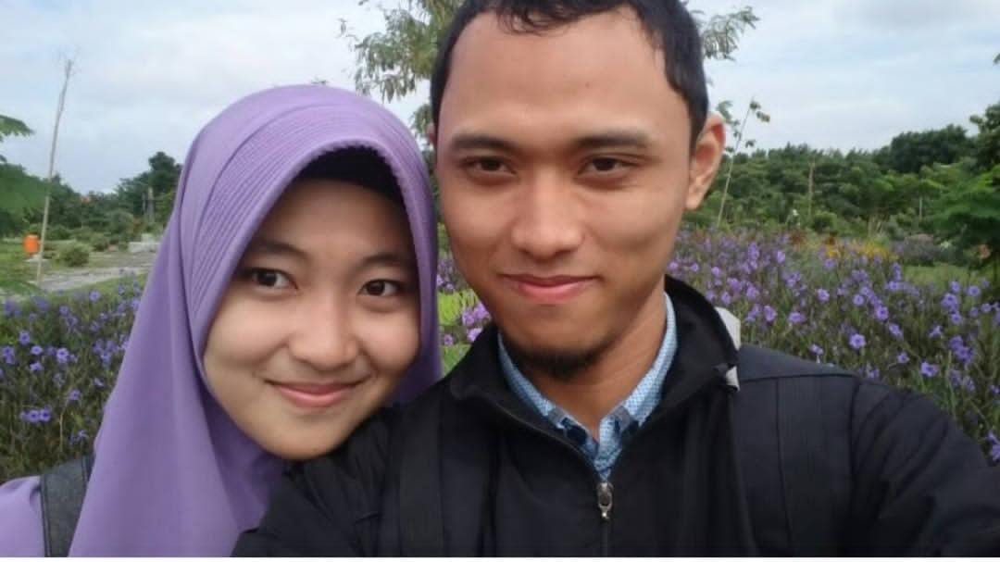

01

Foto kenanganimages/01-awal-mula.jpg
Awal Mula
Semua berawal dari hal-hal sederhana yang waktu itu tidak terasa istimewa — obrolan panjang tanpa arah, tawa yang tidak direncanakan, dan keberanian kecil untuk akhirnya mengucapkan kata itu.
Sejak tanggal 8 Oktober 2018, tidak ada lagi "aku" dan "kamu". Ada kita. Yang waktu itu belum tahu apa yang akan dihadapi, tapi sudah yakin satu hal: mau dijalani bersama.
"Kita mulai dari nol, tanpa jaminan, hanya dengan keberanian."